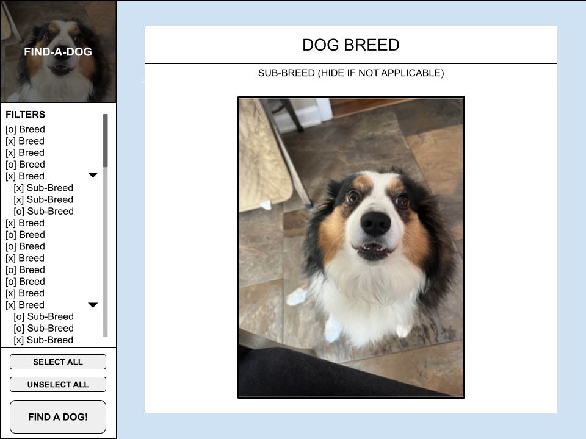

Planning
This is the Google Drawing I made to plan out the layout.
Link to imageLink to main page (index.html)
Link to main (index.html)Resources
- MDN Javascript Documentation
- Geeks For Geeks: Fetch requests
- Geeks For Geeks: Linking to part of a page in JS
- W3Schools CSS Documentation
- MDN CSS Documentation
Process/Meeting Requirements
After ensuring that my design met requirements, through checking my proposal with the professor, I did my best to build it 1 to 1 according to my sketch. This ensured that I had all of the controls I needed (checkboxes, quantity field, selection buttons).
While the HTML and CSS proved to be relatively straight forward, I had to do a lot of research on Javascript. The documentation is very in-depth so I was able to figure out how to use the input controls fairly quickly (alongside some trial and error).
The image saved in localStorage is loaded in the top left corner when the page is loaded. This image is a random dog if you've never searched before, or a dog from your previous search if you have.
Sources
Fonts:
- Trebuchet (Applied)
- Lucida Sans Unicode (Backup)
- Lucida Grande (Backup)
- Lucida Sans (Backup)
- Arial (Backup)
- Sans-serif (Backup)
Images
- Loading icon: Made in Google Drawings
- Placeholder dog: My photo
- All other assets aren't in src folder: Acquired through fetch requests
Other Notes
I had to figure out how to make the page auto scroll to the content area AFTER loading images and I had no idea how. Thankfully, a quick search taught me that we can move the window through Javascript!
If you look between the design picture and the website, you'll notice that sub breeds aren't drop downs: I thought it unnecessary because the breeds scrollbar is present.